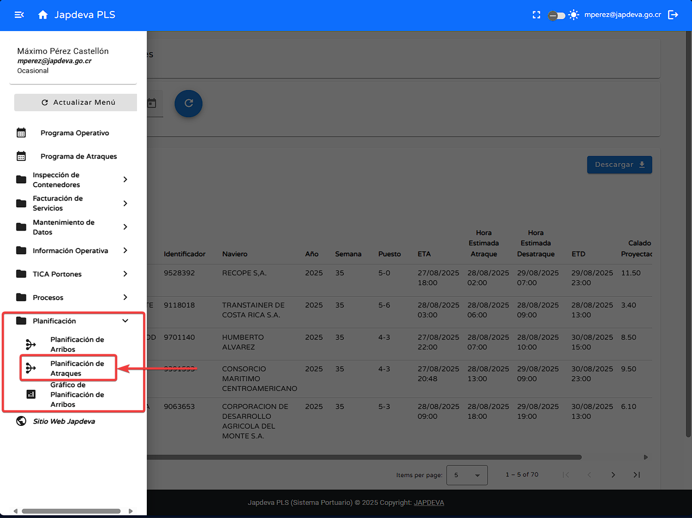

Bienvenido a la guía de usuario para la pantalla Planificación de Atraques del sistema PLS. Esta guía está diseñada para ayudarte a utilizar y comprender de forma sencilla y directa las funcionalidades que ofrece esta pantalla.
Localizada dentro del submenú Planificación esta pantalla ofrece una vista general de la información relacionada a los buques, además de tener funciones de búsqueda, descarga y acciones extra que complementan el acceso a la información.
Para realizar el filtro de visualización por rango de fechas se debe de seguir los siguientes pasos:
Para realizar la búsqueda mediante filtro de manera exitosa se debe de seguir los siguientes pasos:
Para realizar la descarga de los datos en alguno de los diversos tipos existentes se deben de seguir los siguientes pasos:
Para realizar la actualización de datos se debe de seguir los siguientes pasos:
Para visualizar de manera correcta la información extra relacionada a los buques registrados se debe de hacer lo siguiente:
Para esta función se debe seguir los siguientes pasos:
Para esta función se dbee seguir los siguientes pasos:
Para esta función los pasos a seguir son los siguientes:
Para está funcionalidad se debe seguir los siguientes pasos:
Para brindar una experiencia más confortable, a continuación se explicarán cada uno de los diversos campos que componen la tabla presente en la pantalla. (Yendo de izquierda a derecha).
Si necesitas ayuda adicional, contáctanos: